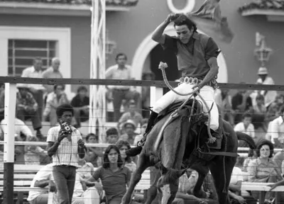
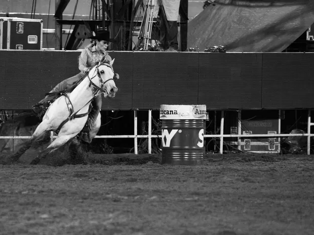
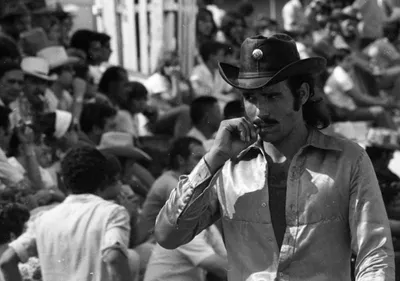
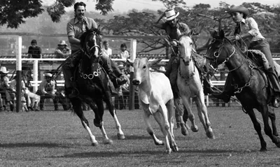
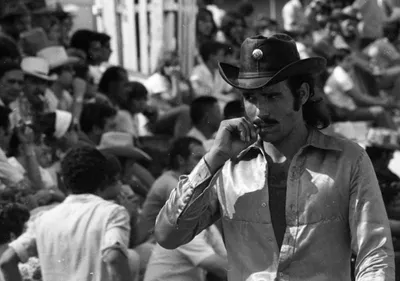
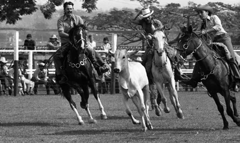

Festa do Peão de Barretos
origem
A história de Barretos se confunde com o rodeio brasileiro. Até 1955, Barretos era uma pacata cidade que tinha na pecuária sua principal atividade econômica. Passagem obrigatória dos "corredores boiadeiros", como eram conhecidas as vias de transporte de gado entre um estado e outro, Barretos era sede também do Frigorífico Anglo, instalado em 1913 e de propriedade da família real inglesa, suas instalações lembram uma autêntica vila inglesa. Era na época o maior da América Latina. Mas eram os peões das comitivas, que reunidos para descansarem, acabavam criando mil maneiras para se divertirem. E como não podia deixar de ser, nestes encontros tentavam mostrar suas habilidades na lida com o gado. Nesta época era frequente em Barretos a vinda de dançarinas de cabarés franceses para entreter fazendeiros e os peões de comitivas.


 


